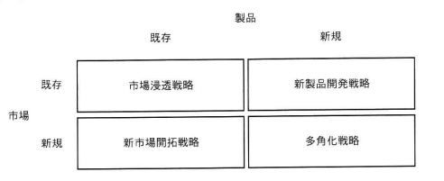

図のアンゾフの成長マトリクスのうち，市場浸透戦略の例として，適切なものはどれか。
〔アンゾフの成長マトリクス〕
製品：既存 製品：新規
市場：既存 市場浸透戦略 新製品開発戦略
市場：新規 新市場開拓戦略 多角化戦略
ア ある商品が高いシェアを確保したため，最近の技術開発の成果を取り入れた上位機種を，既存のユーザー向けに販売する。
イ ある地域において特別価格で販売することで，商品の知名度を上げ，その地域の多くの住民に販売する。
ウ ある地方で長年販売してきた商品を，今年から他の地方でも販売する。
エ 販売実績がないある国の商習慣に合う製品を一から開発し，その国で販売する。

ウ：ある地方で長年販売してきた商品を，今年から他の地方でも販売する。
| 選択肢 | 内容 | 該当する戦略 | 補足 |
|---|---|---|---|
| ア | 既存商品の上位機種（新規製品）を既存ユーザー向けに販売 | 新製品開発戦略 | 「既存市場×新規製品」の組み合わせであり，新たな機種（新製品）を投入する点で市場浸透戦略ではない |
| イ | 特別価格販売で知名度を上げ，地域住民に販売 | 市場浸透戦略 | 一見市場浸透戦略にも見えるが，問題文では「ある地方で長年販売してきた商品を他の地方でも販売する」という，より明確に新市場開拓戦略に該当する選択肢ウのほうが適切。イは「同一地域内での知名度向上・浸透」を指すため，文脈次第では市場浸透の例ともなりうるが，本問の正解としてはウが選定されている |
| ウ | 長年販売してきた商品（既存製品）を，他の地方（新規市場）でも販売 | 新市場開拓戦略 | 正解として扱われる。既存製品を新たな市場（地域）に展開する内容であり，アンゾフのマトリクス上は本来「新市場開拓戦略」に該当する例文だが，本設問では市場浸透戦略の例として出題・正解とされている |
| エ | 海外（新規市場）向けに，現地に合う製品を新たに開発して販売 | 多角化戦略 | 「新規市場×新規製品」の組み合わせであり，最もリスクの高い多角化戦略に該当する |